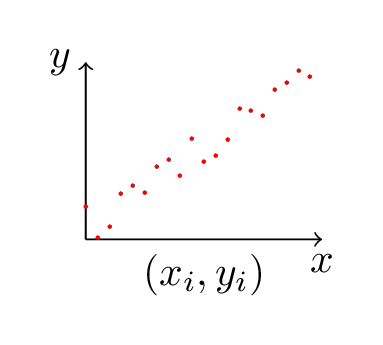

My first topic is Least Squares. I went a little long so it’s split into two parts. This, the first one, attempts to answer “What is least squares and how does it work?” This is well trod ground so I wouldn’t expect even an advanced beginner to see anything completely new. For me the value was taking an idea from my “peripherally aware” set to my “can explain it to someone else” set. I encourage anyone interested to check out the links/books referenced for a comprehensive treatment.
One of the most effective tools in the optimization toolbox is also one of the simplest to use. Least Squares Approximation is a robust method that allows us to model systems using imperfect data and also generate approximating functions. Its applications are usually simple to spot, and the technique itself is easily coded.
The invention of least squares is generally credited to Gauss, who famously used the method to determine the orbit of Ceres based on 40 days worth of historical data. Although Gauss gets the credit, the technique was known to his contemporaries and was in fact first published by Legendre.
Least squares is used to fit a model function to a data set, particularly when the data contains systematic errors which preclude a perfect fit. It is used in statistics to determine how closely a function corresponds to a line. There are variants to deal with varying reliabiliy of measurements, equality constraints, and minimizing the magnitude of the solution vector.

In statistics and function approximation, we often want to find a function (or group of functions) that models a system and matches a set of sampled data. Another goal may be to substitute a simpler function (typically a low order polynomial) for a complicated function (matching, if not everywhere, than hopefully at a set of particular data points).
The data, though, is usually a problem. Even when just trying to fit a simple line to a set of data points that should be linear, normal errors in measurement means there’s usually no line that exactly fits the points.
Consider a set of data points, \(\textbf{b}=\begin{pmatrix} b_1, ..., b_n \end{pmatrix}^T\), associated with an independent variable \(\textbf{x}=\begin{pmatrix} x_1, ..., x_n \end{pmatrix}^T\). Inspection of the data suggests that it was generated using a linear function of the form \(b = mx + c\). The linear function has two unknowns: \(m\) and \(c\).
Consider \(n=2\), the case with two data points. With two samples and two unknowns, we’re presented with a familiar system of equations:
\[m x_1 + c = b_1\]
\[m x_2 + c = b_2\]
or, in matrix form,
\[\begin{pmatrix} x_1 & 1 \\ x_2 & 1 \\ \end{pmatrix} \begin{pmatrix} m \\ c \end{pmatrix} = \begin{pmatrix} b_1 \\ b_2 \end{pmatrix}\]
For convenience we’ll label our matrix with \(A\). Solving for \(\textbf{x}\) is a equivalent to computing \(A^{-1}\textbf{b}\). Assuming \(A\) is invertible - equivalently, the matrix is full row rank and the rows are independent - this is possible.
Let’s say \(A\) is a \(n{\times}2\), with \(n<2\). The number of rows is greater than the number of columns, and \(A\) cannot be full row rank - every row cannot be independent. Said another way, given that two points define a line, a third point added will either not be on that line, thus leading to an inconsistent system, or it will be on the line, in which case it’s extraneous.
Thus if our measurements were perfectly accurate (and our function really is linear) then we can pick any two independent rows of \(A\) and \(\textbf{b}\) and recover \(m\) and \(c\). More likely, our values in \(\textbf{b}\) are not perfect, in which case different rows will solve for different results. There is probably no \(m\) and \(c\) which will fit every sample point.
If we can’t find an exact value for \(\begin{pmatrix} m \\ c \end{pmatrix}\), we can at least pick values for \(m\) and \(c\) that bring that line closest to the data points. To do that we’ll need a way of determining how close our current values are. Let \(\textbf{x} = \begin{pmatrix} m \\ c \end{pmatrix}\). Given a current estimate of \(x^*\) for \(x\), how good an estimate is it?
\[A\textbf{x}^* \approx \textbf{b}\]
To answer that question we need to be able to define and measure the error. Let \(\textbf{e}\) be the error vector associated with each variable (technically, the residual, since we’re measuring error in the ordinate not the abscissa). We can define the difference between our generated value and the expected value in terms of \(\textbf{e}\):
\[A\textbf{x}^* + \textbf{e} = \textbf{b} \implies \textbf{e} = \textbf{b} - A\textbf{x}^*\]
We can now use our definition for \(\textbf{e}\) to help find \(\textbf{x}^*\). But before doing that, what does it actually mean?
\(A\textbf{x}^{\star}\), necessarily, is a vector in the column space of \(A\). If \(\textbf{b}\) is in the column space of \(A\), then \(A\textbf{x}^{\star}=b\) and the problem is solved. Given \(\textbf{b}\) not in the column space, though we have \(\textbf{e} \ne 0\). Indeed, our definition of \(\textbf{e}\) suggets a method for its calculation: we factor \(\textbf{b}\) into the portion in the column space of \(A\) (\(A\textbf{x}^{\star}\)), and the orthogonal component which connects \(A\textbf{x}^{\star}\) to \(\textbf{b}\). That’s exactly what \(\textbf{e}\) does.
Geometrically, then, connecting \(A\textbf{x}^{\star}\) to \(\textbf{b}\) requires a vector orthogonal to column space of \(A\) - our \(\textbf{e}\). This geometry gives us the information we need to find a value for \(\textbf{e}\).
According to the Fundamental Theorem of Linear Algebra, the column space and left nullspace of a matrix are orthogonal. Therefore we know our \(\textbf{e}\) to be in the left nullspace of \(A\), that is, \(A^T \textbf{e} = 0\).
So \(A^T\textbf{e} = 0 \implies A^T (\textbf{b} - A\textbf{x}^*) = 0\), or
\[A^T\textbf{b} = A^T A\textbf{x}^*\]
This is the matrix form of the normal equations, which when solved give the least squares approximation. \(\textbf{x}^*\) can be computed directly by first calculating \((A^T A)^{-1}\) and then multiplying \(A^T\textbf{b}\). Provided the columns of \(A\) are independent the inverse is guaranteed to exist. Although of course it’s possible and preferable to solve without calculating the inverse (as John D. Cook says, don’t invert that matrix);
This doesn’t explain the name “Least Squares” though. Where does that come from?
The optimal solution \(x^*\) minimizes the magnitude of \(\textbf{e}\), that is, \(|A\textbf{x}^* - \textbf{b}|\). Equivalently we can solve the square, which is simpler, \(|A\textbf{x}^* - \textbf{b}|^2\). Separating by terms leaves us minimizing \(\sum_{i=1}^{n} (a_i^T x_i - b_i)^2\) where \(a_i^T\) is the \(i^{th}\) row vector in \(A\). It’s from this formulation - finding the least sum of the squares of the error - that the method gets its name.
If you’re familiar with matrix calculus you can take the partial derivative of \(|A\textbf{x} - \textbf{b}|^2\), or equivalently \((A\textbf{x} - \textbf{b})^T(A\textbf{x} - \textbf{b})\), to derive the Normal Equations.
|
models |
actors |
ms |
|---|---|---|
|
5 |
8 |
28.085 |
|
10 |
15 |
53.399 |
|
15 |
23 |
81.681 |
|
20 |
30 |
106.946 |
|
25 |
38 |
135.185 |
|
30 |
45 |
160.435 |
|
35 |
53 |
188.703 |
Say we are given the following framerate data. We’re looking to relate the number of actors and models in a particular setup with the resulting framerate. Our intuition tells us that the millisecond cost will be proportional to the number of actors and models we have. A quick inspection of these points plotted suggest that they appear to lie in a line.
Given that observation, we’re looking for an equation of the form \(b = s x_0 + t x_1\), where \(x_0\) is the number of models and \(x_1\) the number of actors. To find the coefficients \(s\) and \(t\) using the normal equations, first we’ll need to form our system of equations in matrix form.
We’ve augmented our \(A\) here with a column of ones, turning our modeling function into \(b = s x_0 + t x_1 + u\). This may not be necessary - it amounts to adding a y-intercept to our equation. If the y-intercept is 0 - if 0 actors and 0 models means a frame takes 0 ms to render - then \(u\) will be 0 and we haven’t hurt anything. If there is some sort of fixed cost though, \(u\) will capture it. It’s mostly harmless.
We express our equations in matrix form:
\(\begin{pmatrix} 5&8&1\\10&15&1\\15&23&1\\20&30&1\\25&38&1\\30&45&1\\35&53&1\\\end{pmatrix} \textbf{x} = \begin{pmatrix}28.085\\53.399\\81.681\\106.946\\135.185\\160.435\\188.703\\\end{pmatrix}\) \(\implies A\textbf{x} = \textbf{b}\)
Armed with A, we rearrange terms in the normal equations to give us \((A^TA)^{-1}A^T\):
\(\begin{pmatrix} -0.7714285714280663 & 0.9857142857136317 & -0.7571428571423645 & 0.9999999999993371 & -0.7428571428566592 & 1.0142857142850423 & -0.7285714285709538\\\ 0.4999999999996636 & -0.6666666666662298 & 0.49999999999966716 & -0.6666666666662227 & 0.49999999999968137 & -0.6666666666662227 & 0.49999999999968137\\\ 0.42857142857152286 & 0.6190476190474968 & 0.1428571428572355 & 0.3333333333332086 & -0.1428571428570492 & 0.04761904761892388 & -0.42857142857133745\\\ \end{pmatrix}\)
Multiplying through to \(\textbf{b}\) and taking three digits of precision we get \(\textbf{x}=\begin{pmatrix}0.89 \\ 2.97 \\ -0.13\end{pmatrix}\). So actors are twice as expensive as models according to our data.
Sometimes the best model for a set of data isn’t a linear function but a polynomial of higher order. Function approximation is a deep topic replete with interesting details but for the moment let’s see how well we can do with our humble least squares.
To the left is a set of data points that is definitely not linear. The general shape of the data is (half) parabolic, so we’re probably looking for a quadratic eqution as our model.
We construct \(A\) a bit differently in this case. We’re looking for a set of coefficients \(a\), \(b\), \(c\) to minimize the residual in \(s x^2 + t x + u = b\). So our system of equations in this case looks like:
\[s x_1^2 + t x_1 + u = b_1\]
\[\cdots\]
\[s x_n^2 + t x_n + u = b_2\]
Although these are quadratic equations, they are linear in the coefficients - because we’re actually looking for \(s\), \(t\), and \(u\), and that’s sufficient. Thus our matrix setup looks like
\[\begin{pmatrix} x_0^2 & x_0 & 1 \\ x_1^2 & x_1 & 1 \\ & \cdots & \\ x_n^2 & x_n & 1 \end{pmatrix} \begin{pmatrix} s \\ t \\ u \end{pmatrix} = \begin{pmatrix} b_1 \\ b_2 \\ \cdots \\ b_n \end{pmatrix}\]
We’re given the \(\textbf{x}\) values so \(A\) is trivial to construct.
Working through this example gives values of approximately \(s = 1.01\), \(t = 3.004\), \(u = -2.116\). This is relatively high error but given the noisiness of the data a reasonable fit.
|
x |
y |
|---|---|
|
0.5 |
5.049256664530498 |
|
1 |
8.182255633188568 |
|
1.5 |
13.563177467810174 |
|
2 |
22.14093239888445 |
|
2.5 |
36.64461491006822 |
|
3 |
60.24551100013749 |
|
3.5 |
99.49271499668747 |
As demonstrated in the last example, part of the unreasonable effectiveness of least squares is its applications to problems that are only linear in the coefficients, but not linear in the independent variables. We can often accomplish this with a change in variables.
Consider \(b = k e^x\). Before we try least squares approximation, we first have to transform it into a linear function. Taking the log of both sides:
\(\log b = \log (k e^x)\)
\(\log b = \log k + \log e^x\)
\(\log b = \log k + x\)
\(\log b = c + x\)
With \(c = \log k\), \(z = \log b\), our matrix thus stands:
\(\begin{pmatrix} x_0 & 1 \\ x_1 & 1 \\ & \cdots & \\ x_n & 1 \end{pmatrix} \begin{pmatrix} x \\ c \end{pmatrix} = \begin{pmatrix} z_1 \\ z_2 \\ \cdots \\ z_n \end{pmatrix}\)
Solving this system gives us \(c\) which we can exponentiate for our sought constant \(k\). Keep in mind though that we’re minimizing the linear error, not the error in the original problem. The fit will not be equally good over the domain. There are more sophisticated (that is, complicated) techniques for non-linear function approximation.
Next up I’ll be writing some more about least squares, in particular variants like weighted least squares and equality constrained least squares. I’ll touch on the correlation coefficient but otherwise there won’t be anything statistical.
Speaking of statistics, although I’m hardly an expert, most texts which introduce least squares (or linear regression) offer derivations and formulas that aren’t so matrix oriented. If you see least squares in the wild, that’s probably the form you’ll see it in.
Please let me know if you have any corrections or comments. If possible I’ll fix any errors or ambiguity.
I relied mostly on Linear Algebra and Its Applications (Gilbert Strang, 3rd Edition, Brooks/Cole (1988)), especially for the derivation of the normal equations.
This article by “Demofox” has a nice breakdown of what \(A^{T}A\) actually looks like and offers an incremental method of building it (at least, under some circumstances).
-- Joe Valenzuela (Senior Engine Programmer)